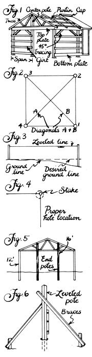
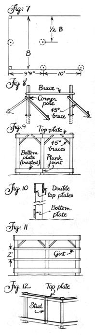
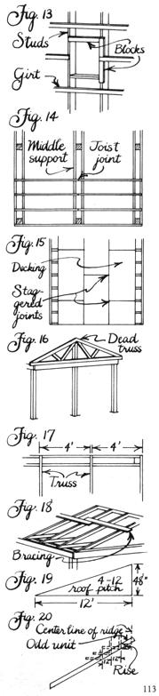
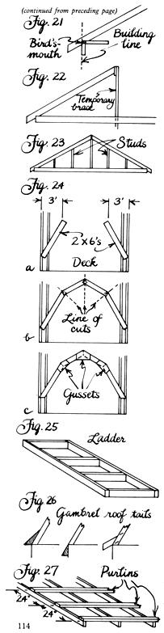
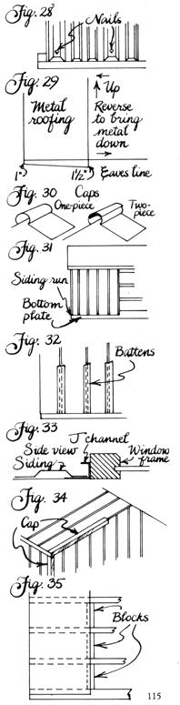
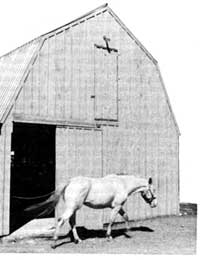

Homesteading Handbook
It's a fact that can't be ignored: The cost of building is leaping skyward at a tremendous pace. In just the past ten years, building costs have doubled, the rise being attributable to the increase in both material costs and labor rates. And today's higher prices have forced many people to abandon the idea of erecting buildings that they both need and want.
That is the reason MOTHER decided to print this feature, adapted from the book Pole Building, by Norm Ecker, Sr., and Jeff Flanders. Norm and Jeff don't feel you should have to go without the garage, shed, or barn you need any longer. Pole building can save you money! For openers, you can knock 50°70 off the cost of a building by doing the work yourself. The simplicity of this method of construction allows even an inexperienced builder to erect a sound and safe shelter. With the proper tools, and using the systematic approach presented in the following pages, you can put up your own building and save hundreds, or even thousands, of dollars.
It's not just doing the work yourself that will save money, because pole building also conserves material. Pole structures don't require conventional foundations, which means you won't need to hire a backhoe at $20 an hour to dig a footer, or hire a mason at $15 an hour to lay block for the foundation. Pole buildings also use less lumber than do conventional structures, and at the price of 2 X 4's today, that material can add up quickly.
With this article, some simple tools, determination, and a little healthy. sweat, you can have that building that you were going to postpone or go without entirely. Norm and Jeff will lead you through the construction stepby-step, and when you're done, you'll not only have money in your pocket, but also the satisfaction of having created your own place.
One of the advantages of building a pole structure is that it requires only basic hand tools from the ground up. Most people will have a majority of the tools needed, but if you're missing something and can't borrow it from a friend, try a rental agency, which carries most anything, usually at very reasonable rates. The following is a list of the tools you will need:
[1] Posthole digger
[2] Handsaw (good and sharp)
[3] Chain saw (optional)
[4] A 4' level
[5] Nylon chalk line (200')
[6] Shovel
[7] Large wrecking bar
[8] Framing square
[9] Try square
[10] A good rule
[11] Tin snips
[12] Two 100' tapes
[13] Hammer
[14] Line level
[15] Circular saw
Site Preparation
A s in other building methods, before any actual construction begins, you will want to ready the general location of the proposed building, known as the building site. Site preparation for pole buildings is, in most cases, a fairly easy process.
The site for a pole building is generally considered to be an area that's 5' larger in length and width than the outside building dimensions. Staking and squari ng this area is done in the same manner as squaring the building's four corner posts, and for that reason, close attention should be paid to the following directions.
Pick an approximate place for one corner of your site area and drive a stake; this we will refer to as stake number 1. Next, measure the length or width of the area and drive stake 2. If you wish to keep your building square to an existing landmark, such as a road, driveway, or another structure, measure from the landmark to both stakes 1 and 2, making sure they are the same distance from the landmark. To locate stake 3, measure from stake 2 at as near a right angle as possible. To complete the location of your site, measure from stakes 1 and 3 at the same time, and at the point where the proper measurements intersect on your tapes, drive stake 4.
You now must check the site for squareness, and, as noted before, this is done using the same principle which applies to squaring the building.
For any rectangle, you can check the squareness by measuring the diagonals, which are the distances from corner to corner (Fig. 2). If the rectangle is square, the measurements of diagonals A and B will be the same; if they are not, the stakes must be adjusted so they become so. If, for example, diagonal B is longer than diagonal A, you can correct this by moving stakes 3 and 4 back toward stake 1, thus decreasing the length of B and increasing that of A. Proceed by trial and error until the diagonals are equal. It is important that stakes 3 and 4 be moved the same distance each time. A rule of thumb is to move stakes 3 and 4 one-half the difference of your diagonals; e.g., if your diagonals differ 10" in measurement, move the adjusting stakes 5".
It is important while squaring to occasionally check your measurements from stake to stake to be sure they remain constant. If you don't have two tapes, or if the tapes you have won't reach between your corners, a length of marked rope or twine will suffice, as long as you work toward making the diagonals equal.
Now that the site is marked, the task of preparing it for building arises. The main thing to be concerned with here is the leveling of the ground, either by removing the high spots, filling in the low, or doing a little of both. If you can't eyeball the site for hollows, humps, or runs, use some. twine and a line level as in Fig. 3 to help level off the area.
When a concrete floor is planned, the topsoil should be stripped away and the area filled with bank gravel to a height 6" above normal ground level. This allows for a sound base and also helps in drainage. You might even wish to run some perforated plastic pipe around the base to further promote proper drainage.
Once the site has been readied, the building itself can be laid out and the poles set.
Layout and Pole Setting
Laying the building out begins by staking out the four corner posts, using the same method described in the preceding section. When measuring, subtract 3" from the width and length of your outside dimensions to allow for the side girts; thus, if your building is to be 20' X 24', stake it out 19' 9" X 23' 9".
Once your stakes are set and squared, you can begin digging your holes. The stakes, remember, represent the outside corner of your poles, so your hole should be dug accordingly (Fig. 4). The poles you will be using will be either 4" X 6" or 6" X 6"; to properly accommodate these, your holes should be 12" or 14" in diameter. The holes should be as deep as the average frostline in your area, and a minimum of 3' . In most cases, 3' to 4' is adequate.
Wear gloves while digging; posthole diggers can eat even the most callused hands. Use your shovel to dig as much as possible; then take the wrecking bar and loosen the ground and remove it with the posthole digger. If you don't relish digging the holes by hand, you could hire a power posthole digger, which you can locate through the yellow pages. Whatever method you use, be sure that any loose dirt is removed from the hole.
At this point, let us interject some advice on selecting poles. First, be sure that the poles you buy have been pressure-treated; shop around for those with the best guarantee. In buildings with dimensions of less than 30', 4" X 6" poles are used; for larger buildings, a 6" X 6" pole is better. Pick the straightest poles you can find. Some warpage is inevitable, but you needn't buy a pretzel. To determine the correct length, add the desired depth of the pole below ground to your eaves' height, plus a foot. For poles in a gable end, add enough so the truss can be nailed to them (Fig. 5). The poles are, in effect, the foundation of your building; choose them carefully.
You are now ready to set your corner poles. Before setting a pole, pour a third of a bag of concrete mix in the hole; this will act as a footer. Slide a pole in a hole and stand it upright. Use your 4' level to level the pole in both directions and attach it to braces (Fig. 6). Do not fill the hole at this time. Instead, set all four corners in this manner, checking the measurements and squaring from the inside corners of the poles. To move a pole, use the large wrecking bar as a lever and gently shift the bottom of the pole. When all measurements are right, there is one last squaring before filling the holes. Nail nylon string about 9" above the ground and stretch it tightly around all four poles, leveling between poles with a line level. Check to see that each pole is squared to the line.
If the outside measurements, diagonals, and line squaring all check out, the holes can be filled. This is done by dumping the rest of a bag of concrete mix in the hole, and then filling to ground level with earth. Tamp the earth around the pole, but be careful not to jar or move the pole. Unless you live in an extremely arid area, you won't need to add any water to the concrete; soil moisture will be sufficient.
The remainder of the poles may now be positioned. Starting from the corner, measure 9' 9" down the string and 3" back from it, and drive a stake. For each successive pole, measure 10' from stake to stake (Fig. 7). If your building plan doesn't allow equal distancing of poles using 10' centers, place your poles where they will divide an area equally. Do not place poles more than 10' apart except where an overhead or slide by door opening will be located. Be sure, when measuring to locate these in-between poles, that all measurements originate from the same end of the building. Gambrel roof buildings wider than 20' require a row of poles down the middle of the building. These may be located by measuring between two outside stakes, splitting the measurement in half, and setting a stake (see Fig. 7). Take down the nylon string and dig all remaining holes, then replace the line before setting the poles. Keep the outside face of the pole flush with the string, making sure the pole is not pushing on it. Measure, level, and brace as shown (Fig. 8). When all poles are set, checked, and filled, move on to your top and bottom plates.
Top and Bottom Plates
The first framing attached to the set poles is the bottom plate, which is usually a 2 X 10 treated plank. The reason for using a treated plank is that the bottom plate sits close to the ground and often has fill pushed up against it, which would hold dampness and rot untreated lumber.
To locate the bottom plate, begin by measuring 1I" -from the ground levelon a corner pole. Run a chalk line from corner to corner, using a line level to check for levelness, then snap the line so that each pole is marked. Place a plank with the top edge even with the lines. Also be sure that if the plank doesn't run from one end of the building to another, it ends at the middle of a pole (Fig. 9). Nail the plank with pole barn nails; they are especially hardened and ribbed so they anchor very securely in the pole. Do not use regular common nails, as they may work loose because of the preservative in the wood. Run the planks all around the building, using four or five nails in each pole. Double-check to be sure the plate is level.
Use the bottom plate for reference when locating the top plate. For an 8' eave height, measure up from the top of the bottom plate 7' 9" on each pole, and mark across the face of the pole with a try square. When marking eave heights other than 8', subtract 3" and mark as already described. The lines represent the top of the plate; run your plank to them and nail as you did the bottom. These planks should be untreated 2 X 10's. After the plate is nailed all around the building, use your try square to mark each pole on the inside the same height as the outside plate. Nail another plate around the inside of the building, making a double top plate (Fig. 10).
Now, 45° bracing can be placed between the poles to strengthen the building (Fig. 9). Come down 18" or 2' on each pole to locate one end of the brace. The brace should be made of a 2 X 6 with a 45° angle cut across one end. The brace will go up between the two top plates; nail into the brace with No. 16 common nails. Use the first brace as a pattern to mark the rest with.
At this point, the poles that stick above the top plate can be cut of. This can be done with either a sharp handsaw or a chain saw. If you are using a chain saw, observe all safety precautions. It's better to be safe now than sorry later.
Side Girts
The method of framing the walls is another area in which pole building differs from conventional construction. Instead of vertical studding on 16" centers, 2 X 4's are run across the poles horizontally (Fig. 11). These 2 X 4's are called girts. Girts are placed 24" on center measuring up from the bottom plate. It is best to measure on each corner pole and strike a line to keep the girts level across the building.
The only place studding will be necessary is in the rough openings for windows and doors. On either side of a window or doorway there must be a pole or a stud. The distance between these studs is determined by the rough opening width of your door or window. Studs are 2 X 6's placed in between the two top plates and down vertically to the bottom plate (Fig. 12). Studs should be leveled with a 4' level.
To complete the framing, run pieces of 2 X 6 horizontally at the top and bottom of your rough opening-for doors, of course, just at the top. The studding can be done before the girts are put on, and the girts cut out of the opening, or the girts can be cut to the opening and put on after the studding is in. When the studding and girts are installed, cut blocks to run around the opening to bring the entire face of the opening flush to the girts (Fig. 13).
Sound short and simple? Absolutely.
Second-Story joists
If you are planning a building with a second floor, the floor joists are the next step. The joists are 2 X 8's or 2 X 10's sitting on the top plate, running from one side of the building to the other. If the building is too wide to run a solid joist, there should be a supporting plate running down the middle or wherever the joist joints will be (Fig. 14).
The joists should be on 16" centers. Toenail them into the top plate with 16d common nails. (You may want to cut angles on the ends of your joists so they won't stick up above the rafters and have to be cut later.)
When the joists are in place, you can put on your decking, using at least I/2" CDX plywood panels. To start the plywood, strike a line 1 ' in from the edge of the rafters. This allows room for the rafters to rest on the top plate. Nail the decking, staggering the joints as you go (Fig. 15).
Rafters and Trusses
Rafter and truss are the terms most commonly given to the structural framework of the roof. A rafter is one of the parallel beams that support a roof, and a truss is an assembled rigid framework. We will discuss trusses and their setting, and then the laying out, building, and setting of your own rafters.
Factory trusses have gained much popularity in the past few years, for a number of reasons. Strength is one selling point; they are engineer-designed, constructed with heavy metal gussets, andbecause they are mass-produced-they are uniform. From the self builder's point of view, simplicity would have to be the shining attribute of trusses. It is much easier to swing a truss into place and secure it than to figure, cut, and erect rafters. Trusses can be bought from many local lumber mills in a variety of styles.
The first truss set is known as the dead truss; it sits along the outside wall against a pole (Fig. 16). It is important that the dead truss be level, as the rest of the trusses will be set using it as a guide. When using purlins on your roof, you may space your truss 4' on center unless you have a very low roof pitch or expect heavy snow loads. For other applications use a 2' center. Mark on the top plate the location of the truss, 4' from the outside of one to the inside of another (Fig. 17). Place one end of the truss on the top plate, then walk the other end up, leaving the truss hanging inverted between the walls. To right the truss, push it up with a 2 X 4 wedged in the peak. When the bottom of the truss is in place and nailed to the top plate, measure from the dead truss near the peak the same outside-inside measurement used at the plates. Anchor the truss in place, using temporary bracing running from the dead truss (Fig. 18). Repeat this procedure until all your trusses are set. Keep in mind that as you get to the end of the building, you will run out of space to swing the last couple of rafters up into place, so plan ahead by raising the last few all at once and setting them later. Be sure, too, that the overhang of the truss remains the same all the way down the building; it may be necessary to push or pull the walls just a little.
If you can't get factory trusses or would rather build your own, the next section is for you. Here we'll discuss how to lay out and build gambrel roof rafters and saddle roof rafters.
The saddle roof (see Fig. 23) is probably the most common roof today, and constructing its rafters is fairly simple.
The first thing to determine before laying out your rafters is what pitch you want your roof to have. Roof pitch is usually given in terms of height rise in the roof per foot; that is, a 4-12 roof pitch has a peak that rises 4" for every foot horizontally along the top plate to the middle of the building (Fig. 19). To ascertain the approximate length of 2 X 4 or 2 X 6 you'll need for your rafters, consult the rafter conversion table on your framing square, which, with a given pitch, will give you the length of the rafter. To this you should add any overhang you desire. This will give you the total length of the rafter.
The step-off method is used most frequently in laying out rafters, and entails the use of your framing square. Mark the ridge end of the rafter first, by laying your square with 12" on the blade and the unit of rise in the tongue both lining up on the edge of the rafter (Fig. 20). If the line length does not come to an even foot measurement, measure the smaller length from the top, then mark down the rafter a foot at a time until you get to the building line. At this point turn the square upside down, and mark out the overhang just as you have the rest of the rafter. To mark out the notch where the rafter sits on the plate, commonly called the bird's-mouth, run your square at a right angle to the building line about a third of the way up the line, and mark out the notch and the end of the overhang (Fig. 21). Use this piece as a pattern for the rest of your rafters.
To erect rafters of this type, mark out their locations on both sides of the ridgepole, and nail one side of each rafter to the pole. Set the ends of the rafters in place along the plate, and raise the ridge to its proper height with temporary 2 X 4 braces (Fig. 22). Now nail the rafters for the other side. Stud in the front and back peaks on 16" centers (Fig. 23).
The style of roof that many of us associate with barns is properly called a gambrel roof (see Fig. 24c). The reason for its popularity in barns is that it provides a large amount of storage area at a reasonable cost. Since a gambrel roof truss with its cross bracing would defeat this open space advantage, gambrel roof rafters are cut and erected on the site in the following manner.
Place a 2 X 6 on each side of your roof deck so that the ends come out even with the edge of the joists on one end, and approximately 2' to 3' in from the edge on the other end (Fig. 24a). Temporarily nail these pieces in place after checking to be sure your measurements were the same. Next lay out two 2 X 6's so that they run across the end of the two you have secured and cross each other in the exact middle of the deck; temporarily nail. Mark lines through the joints at the hips and the peak (Fig. 24b), and cut through the boards at the same time. The four pieces should now fit tightly at the joints. Nail 2 X 4's to make a jig for assembling the pieces uniformly. Mark your pieces as patterns, and mark out one rafter at a time; when the pieces are cut, place them in the jig and nail them at the joints. For added strength at the joints, make plywood gussets 1 ' wide and 4' long out of 1/2" plywood. Lay them at the joints and cut them to fit the angles (Fig. 24c). Glue the rafters and nail the gussets with No. 6 coated box nails. Do this on both sides of each rafter (except for the end rafters, which should only be done on the inside face). Set your end rafter, bracing it well and making sure it's level, then set the remaining rafters, securing each one as described in the truss setting.
When assembling either the saddle or the gambrel roof, if you desire an overhang on the ends of the building, you must build ladders and attach them. Ladders are framed with the same material as the rafters, or with 2 X 4's. A ladder has two runners with spacers every 16" (Fig. 25). Nail the ladders into the end rafters with 16d nails.
Tails for a gambrel should also be attached at this time; a few styles are illustrated in Fig. 26.
If you're going to use metal on your roof, you'll need roof purlins. Purlins serve much the same function as the side girts; they too are 2 X 4's spaced on 24" centers across the rafters (Fig. 27).
Preparations should now be complete for the actual roofing.
Roofing
here are three basic choices of material used in roofing pole buildings: steel, aluminum, and asphalt shingles over plywood; each has its own advantages and disadvantages. Steel and aluminum are strong, quick to apply, relatively maintenancefree, and less costly than shingles and plywood. On the other hand, when they're used in heated buildings without adequate ventilation, condensation may form and the metal will sweat. Plywood and shingles provide a tighter roof that holds heat better than metals, but that costs a little more and deteriorates faster.
Steel usually comes in a 32" width, which covers 30", and in lengths up to 18' . Aluminum comes in 36" and 38" widths and can be special-ordered in lengths up to 28' . Steel and aluminum are applied in the same manner, so the following instructions apply to both.
The most important part of putting on a metal roof is starting the first piece square to the eaves. Allow a 1 " overhang at the eaves, making sure the measurement is the same on both sides of your piece. Fasten steel with galvanized roof nails and aluminum roof nails; these nails are ribbed and have a neoprene washer to seal them. Nail through the high ridges of the metal, drawing the nail tight enough to bring pressure on it without flattening it (Fig. 28). Each successive piece overlaps the preceding one; nail through both pieces.
Check as you apply each piece to see that the overhang is running the same; if the pieces begin to run unevenly, you will have to pull them. Let us say that on one piece you have an overhang of 1" on one side, and 1-1/2" on the other. To even this out, use a hammer to pull the metal straight. If you wish to take the metal back toward the eaves, push the metal at the top-causing a slight hump-and nail; then, on the bottom, stick the claw of your hammer in the rib and pull the metal toward you. -If you are short on the far edge and need to bring the metal out from the eaves, reverse the procedure (Fig. 29).
When cutting metal, get a good metal blade for your circular saw or turn an old plywood blade backward and use that. Protective goggles and earplugs are a must. Aluminum can be cut with a pair of tin snips.
If two lengths of metal are needed to reach the peak, be sure the top piece is put on last and overlaps the bottom by 4" or 5".
At the top the two sides will not join together tightly, making a ridge cap necessary. The cap is specially designed to fit the metal you are using and will be either a one- or two-piece cap (Fig. 30). With the cap on, a metal roof is complete.
A plywood-and-shingle roof does not require purlins, as plywood is nailed directly to the rafters. Measure up on both end rafters approximately 47" and strike a chalk line; this will leave a 1" overhang to allow for the fascia. Run the plywood on this line, spacing the rafters 2' on center as you go. Nail with No. 6 common or box nails. When the next row of plywood is applied, stagger the joints so they don't coincide with those of the previous row (Fig. 15).
When the plywood is on, cover it with 15-pound felt (which comes in rolls and is stapled to the roof as an undercoating for the shingles). Next, nail aluminum or galvanized drip edge around the edge of the roof, and then begin shingling. We will not go into detail on shingle application, as most bundles have excellent directions. If you desire further explanation, consult your library for a book on roofing.
Siding
There are many types of siding available. I'll discuss the three most common: boardand-batten, metal, and sheathing.
Most rural areas will have a small independent. sawmill where you can buy rough-cut lumber at a substantial reduction over lumberyard prices. The planks, usually 1" thick, will vary in width and are sold by the board foot. You will also want a quantity of 3" or 4" battens cut.
The boards are started on a corner of the building, with the planks leveled vertically as they're applied. Number 7 or 8 cement-coated nails are best suited for applying this type of siding. The planks should run down onto the bottom plate without covering it completely (Fig. 31). When the planks are in place, the windows and doors should be placed in their openings and secured. Next, the battens are positioned over each joint. Rough-cut lumber will dry and shrink, so it's important that the battens adequately cover the joints (Fig. 32).
In siding as in roofing, the metals, steel and aluminum, will be discussed together, as they are applied in the same manner.
Before you begin siding with the metals, set your windows and doors. Each window and door should have a drip cap across the top and J channel down the sides and under the bottom of the window; this allows the cut edges of the siding to be covered (Fig. 33).
Start at a corner, making sure the siding is level. When applying the metals as a siding, nail through the flat valleys instead of the ribs, except ad the joints where the two pieces overlap. Use the same kind of nails as you did on the roof. Always start at the bottom so any higher pieces will overlap the lower. When the sides are on, put on the corner caps, which are 6" X 6" L-shaped pieces. Also, if your roof doesn't have an overhang, you will run this material along the roof and the siding (Fig. 34).
The last type of siding is sheathing: 4' X 8' pieces of plywood. The most commonly used is Texture 1-11, a heavy plywood with a rough grooved surface. Again, start from a corner and level your piece. You may want to put in backing blocks between the girts where a joint is located; this is optional but considered a good practice (Fig. 35). After the siding is on, set the windows and doors.
When cutting the angle of the roof pitch on any of these materials, use your framing square to set your angle. If, for instance, you have a 4-12 pitch, place the foot mark on the low corner, go up 4" on the other angle, mark it, and draw a line from the corner through the mark.
EDITOR'S NOTE: The book from which this article was adapted-Pole Building: A Step by Step Guide, by Norm Ecker, Sr., and Jeff Flanders-contains all of the information present d in this Homestead Handbook plus plans for a 30' X 40' X 12' tool shed . . . a 24' X 24' X 8' two-car garage . . . and a 20' X 40' X 8' four-horse barn. If you feel those plans would help you in constructing your own pole building, the book can be ordered for $4.95 plus $1.50 shipping and handling from MOTHER'S BOOKSHELF, 105 Stoney Mountain Rd., Hen dersonville, NC 28791.
|
 |
 |
 |
|
 |
 |
 |